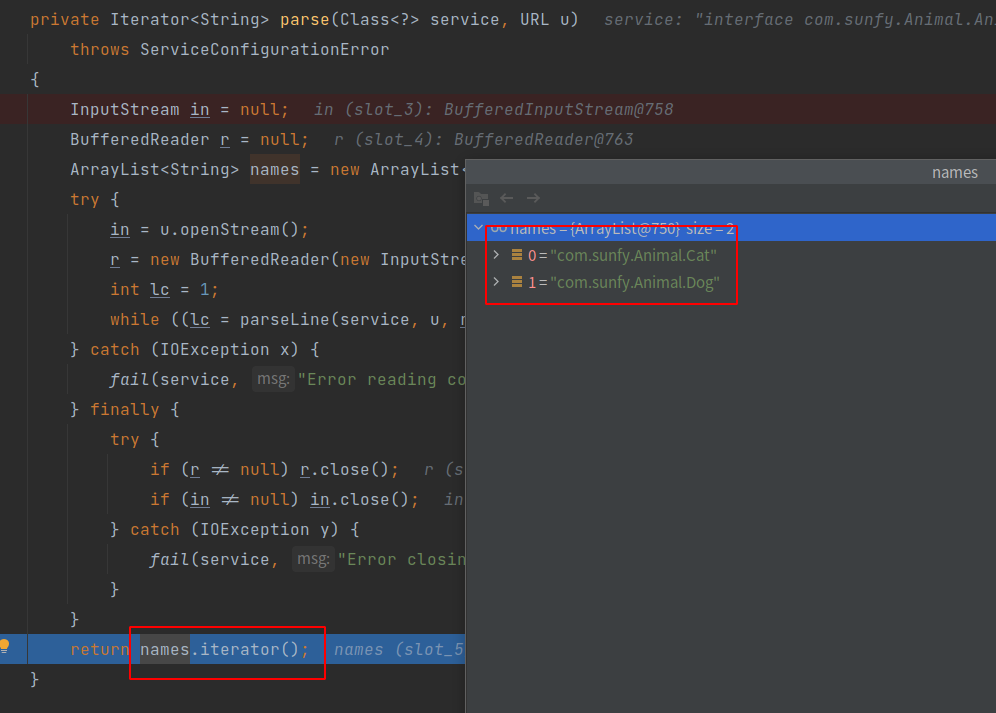
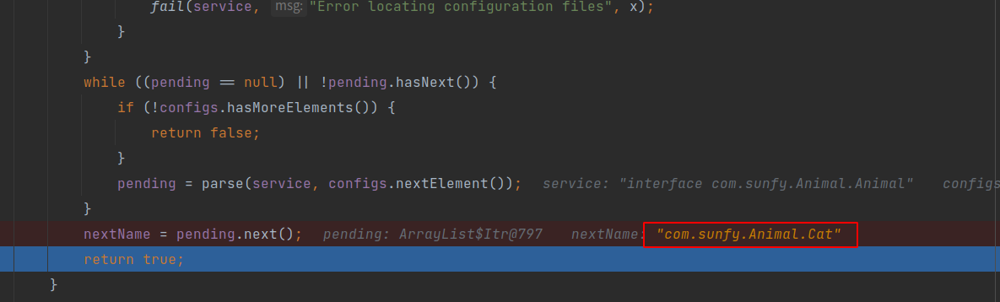
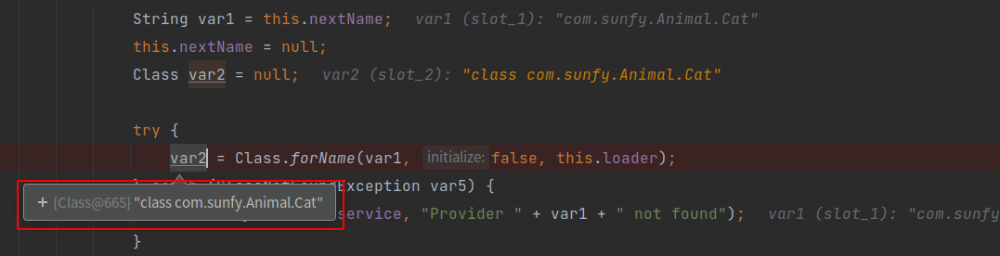
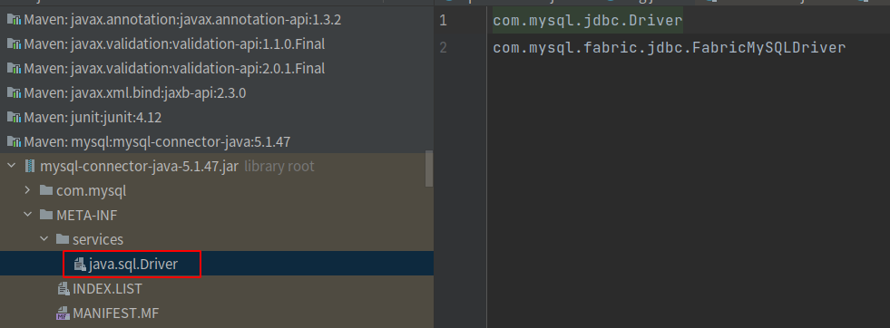

SPI ，全称为 Service Provider Interface，是一种服务发现机制。在ClassPath路径下的META-INF/services文件夹查找文件，自动加载文件里所定义的类。
一、什么是SPI SPI ，全称为 Service Provider Interface ，是一种服务发现机制。通过在ClassPath路径下的META-INF/services文件夹查找文件，自动加载文件里所定义的类。
这一机制为很多框架扩展提供了可能，比如在Dubbo、JDBC中都使用到了SPI机制。我们先通过一个很简单的例子来看下它是怎么用的。
1、例子 首先，我们需要定义一个接口，Animal
1 2 3 4 package com.sunfy.Animal;public interface Animal void noise () }
然后，定义两个实现类，没任何具体业务，简单输出一句话。
1 2 3 4 5 6 7 8 9 10 11 12 13 14 15 package com.sunfy.Animal;public class Dog implements Animal @Override public void noise () System.out.println("wang" ); } } -------------------------------------------- package com.sunfy.Animal;public class Cat implements Animal @Override public void noise () System.out.println("miao" ); } }
最后呢，要在ClassPath路径下配置添加一个文件。文件名字是接口的全限定类名，内容是实现类的全限定类名，多个实现类用换行符分隔。
SPI配置文件位置
内容就是实现类的全限定类名：
1 2 com .sunfy .Animal .Cat com .sunfy .Animal .Dog
2、测试 然后我们就可以通过ServiceLoader.load或者Service.providers方法拿到实现类的实例。其中，Service.providers包位于sun.misc.Service，而ServiceLoader.load包位于java.util.ServiceLoader。
1 2 3 4 5 6 7 8 9 10 11 12 13 14 15 16 17 18 19 20 21 22 23 24 25 package com.sunfy;import com.sunfy.Animal.Animal;import sun.misc.Service;import java.util.Iterator;import java.util.ServiceLoader;public class SpiDemoMain public static void main (String[] args) ServiceLoader<Animal> animals = ServiceLoader.load(Animal.class ) ; animals.forEach(animal -> animal.noise()); System.out.println("--------------------------------" ); Iterator<Animal> providers = Service.providers(Animal.class ) ; ServiceLoader<Animal> load = ServiceLoader.load(Animal.class ) ; while (providers.hasNext()) { Animal animal = providers.next(); animal.noise(); } System.out.println("--------------------------------" ); Iterator<Animal> iterator = load.iterator(); while (iterator.hasNext()) { Animal animal = iterator.next(); animal.noise(); } } }
两种方式的输出结果是一致的：
1 2 3 4 5 6 7 8 miao wang -------------------------------- miao wang -------------------------------- miao wang
二、源码分析 我们看到一个位于sun.misc包，一个位于java.util包，sun包下的源码看不到。我们就以ServiceLoader.load为例，通过源码看看它里面到底怎么做的。
1、ServiceLoader 首先，我们先来了解下ServiceLoader，看看它的类结构。
1 2 3 4 5 6 7 8 9 10 11 12 13 14 15 16 17 18 19 public final class ServiceLoader <S > implements Iterable <S > { private static final String PREFIX = "META-INF/services/" ; private final Class<S> service; private final ClassLoader loader; private final AccessControlContext acc; private LinkedHashMap<String,S> providers = new LinkedHashMap<>(); private LazyIterator lookupIterator; }
2、Load load方法创建了一些属性，重要的是实例化了内部类，LazyIterator。最后返回ServiceLoader的实例。
1 2 3 4 5 6 7 8 9 10 11 12 13 14 15 public void reload () providers.clear(); lookupIterator = new LazyIterator(service, loader); } private ServiceLoader (Class<S> svc, ClassLoader cl) service = Objects.requireNonNull(svc, "Service interface cannot be null" ); loader = (cl == null ) ? ClassLoader.getSystemClassLoader() : cl; acc = (System.getSecurityManager() != null ) ? AccessController.getContext() : null ; reload(); }
3、查找实现类 查找实现类和创建实现类的过程，都在LazyIterator完成。当我们调用iterator.hasNext和iterator.next方法的时候，实际上调用的都是LazyIterator的相应方法。
1 2 3 4 5 6 7 8 9 public static <S> ServiceLoader<S> load (Class<S> service, ClassLoader loader) return new ServiceLoader<>(service, loader); } public static <S> ServiceLoader<S> load (Class<S> service) { ClassLoader cl = Thread.currentThread().getContextClassLoader(); return ServiceLoader.load(service, cl); }
1 2 3 4 5 6 7 8 9 10 11 public Iterator<S> iterator () return new Iterator<S>() { public boolean hasNext () return lookupIterator.hasNext(); } public S next () return lookupIterator.next(); } ....... }; }
所以，我们重点关注lookupIterator.hasNext()方法，它最终会调用到hasNextService。
1 2 3 4 5 6 7 8 9 10 11 12 13 14 15 16 17 18 19 20 21 22 23 24 25 26 27 28 29 30 31 32 33 34 private boolean hasNextService () if (nextName != null ) { return true ; } if (configs == null ) { try { String fullName = PREFIX + service.getName(); if (loader == null ) configs = ClassLoader.getSystemResources(fullName); else configs = loader.getResources(fullName); } catch (IOException x) { fail(service, "Error locating configuration files" , x); } } while ((pending == null ) || !pending.hasNext()) { if (!configs.hasMoreElements()) { return false ; } pending = parse(service, configs.nextElement()); } nextName = pending.next(); return true ; }


4、创建实例 当然，调用next方法的时候，实际调用到的是，lookupIterator.nextService。它通过反射的方式，创建实现类的实例并返回。
1 2 3 4 5 6 7 8 9 10 11 12 13 14 15 public S next () throws ServiceConfigurationError if (!this .hasNext()) { throw new NoSuchElementException(); } else { String var1 = this .nextName; this .nextName = null ; Class var2 = null ; try { var2 = Class.forName(var1, false , this .loader); ...... } } } ------------------------- # 无论调用的是哪种便利的方法，都会在next的遍历方法中调用Class.forName()反射生成最终的我们所需要的类对象
看到这儿，我想已经很清楚了。获取到类的实例，我们自然就可以对它为所欲为了！

三、JDBC中的应用 我们开头说，SPI机制为很多框架的扩展提供了可能，其实JDBC就应用到了这一机制。回忆一下JDBC获取数据库连接的过程。在早期版本中，需要先设置数据库驱动的连接，再通过DriverManager.getConnection获取一个Connection。
1 2 3 4 5 String url = "jdbc:mysql:///consult?serverTimezone=UTC" ;String user = "root" ;String password = "root" ;Class.forName("com.mysql.jdbc.Driver" ); Connection connection = DriverManager.getConnection(url, user, password);
在较新版本中，设置数据库驱动连接，这一步骤就不再需要，那么它是怎么分辨是哪种数据库的呢？答案就是SPI机制。
1、加载 我们把目光回到DriverManager类，它在静态代码块里面做了一件比较重要的事。很明显，它已经通过SPI机制， 把数据库驱动连接初始化了。
1 2 3 4 5 6 public class DriverManager static { loadInitialDrivers(); println ("JDBC DriverManager initialized" ); } }
具体过程还得看loadInitialDrivers，它在里面查找的是Driver接口的服务类，所以它的文件路径就是：META-INF/services/java.sql.Driver。
1 2 3 4 5 6 7 8 9 10 11 12 13 14 15 16 17 18 19 20 21 public class DriverManager private static void loadInitialDrivers () AccessController.doPrivileged(new PrivilegedAction<Void>() { public Void run () ServiceLoader<Driver> loadedDrivers = ServiceLoader.load(Driver.class ) ; Iterator<Driver> driversIterator = loadedDrivers.iterator(); try { while (driversIterator.hasNext()) { driversIterator.next(); } } catch (Throwable t) { } return null ; } }); } }
那么，这个文件哪里有呢？我们来看MySQL的jar包，就是这个文件，文件内容为：com.mysql.cj.jdbc.Driver。

MySQL SPI文件
2、创建实例 上一步已经找到了MySQL中的com.mysql.cj.jdbc.Driver全限定类名，当调用next方法时，就会创建这个类的实例。它就完成了一件事，向DriverManager注册自身的实例。
1 2 3 4 5 6 7 8 9 10 11 12 13 14 15 16 package com.mysql.jdbc;public class Driver extends NonRegisteringDriver implements java .sql .Driver static { try { java.sql.DriverManager.registerDriver(new Driver()); } catch (SQLException E) { throw new RuntimeException("Can't register driver!" ); } } public Driver () throws SQLException } }
3、创建Connection 在DriverManager.getConnection()方法就是创建连接的地方，它通过循环已注册的数据库驱动程序，调用其connect方法，获取连接并返回。
1 2 3 4 5 6 7 8 9 10 11 12 13 14 15 16 17 18 19 20 21 private static Connection getConnection ( String url, java.util.Properties info, Class<?> caller) throws SQLException for (DriverInfo aDriver : registeredDrivers) { if (isDriverAllowed(aDriver.driver, callerCL)) { try { Connection con = aDriver.driver.connect(url, info); if (con != null ) { return (con); } }catch (SQLException ex) { if (reason == null ) { reason = ex; } } } else { println(" skipping: " + aDriver.getClass().getName()); } } }
4、再扩展 既然我们知道JDBC是这样创建数据库连接的，我们能不能再扩展一下呢？如果我们自己也创建一个java.sql.Driver文件，自定义实现类MyDriver，那么，在获取连接的前后就可以动态修改一些信息。
还是先在项目ClassPath下创建文件，文件内容为自定义驱动类com.viewscenes.netsupervisor.spi.MyDriver
自定义数据库驱动程序
我们的MyDriver实现类，继承自MySQL中的NonRegisteringDriver，还要实现java.sql.Driver接口。这样，在调用connect方法的时候，就会调用到此类，但实际创建的过程还靠MySQL完成。
1 2 3 4 5 6 7 8 9 10 11 12 13 14 15 16 17 18 19 20 21 22 23 package com.viewscenes.netsupervisor.spipublic class MyDriver extends NonRegisteringDriver implements Driver static { try { java.sql.DriverManager.registerDriver(new MyDriver()); } catch (SQLException E) { throw new RuntimeException("Can't register driver!" ); } } public MyDriver () throws SQLException public Connection connect (String url, Properties info) throws SQLException System.out.println("准备创建数据库连接.url:" +url); System.out.println("JDBC配置信息：" +info); info.setProperty("user" , "root" ); Connection connection = super .connect(url, info); System.out.println("数据库连接创建完成!" +connection.toString()); return connection; } } --------------------输出结果--------------------- 准备创建数据库连接.url:jdbc:mysql: JDBC配置信息：{user=root, password=root} 数据库连接创建完成!com.mysql.cj.jdbc.ConnectionImpl@7 cf10a6f
四、其他应用场景 ShardingSphere 分布式数据库中间件中使用了非常多的SPI来提高ShardingSphere的可扩展性

Copyright 2021 sunfy.top ALL Rights Reserved